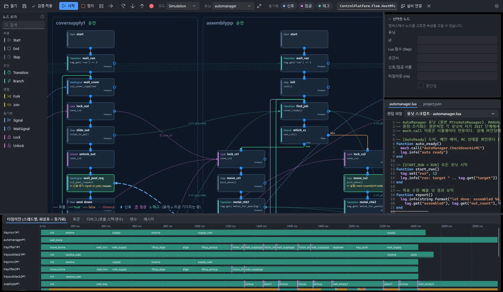
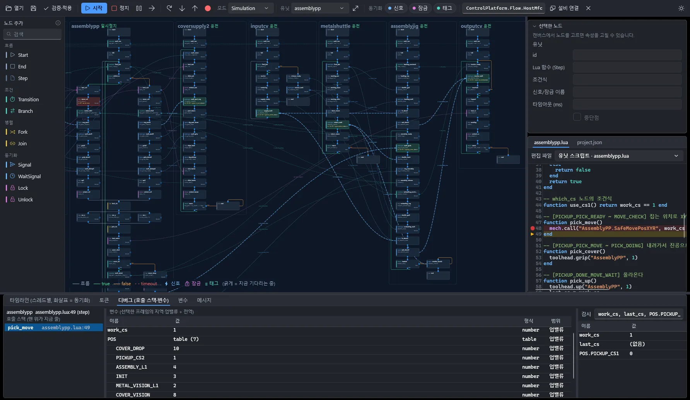
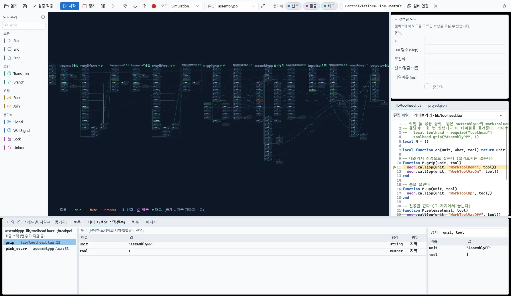

◇
그래프 편집기
Start·Step·Transition·Branch·Fork·Join·Signal·WaitSignal·Lock·Unlock 노드를 팔레트에서 끌어다 놓고 잇습니다. 우클릭 메뉴, 복제(Ctrl+D), 격자 맞춤, 코멘트 상자, 확대·축소와 화면 이동까지.
설비 시퀀스 편집기 · 시뮬레이터 · 디버거
Flow Studio는 설비의 공정 시퀀스를 그래프와 Lua 함수로 만드는 도구입니다. switch 문으로 흩어져 있던 스레드 단계를 한 장의 흐름으로 보고, 시뮬레이터로 먼저 돌려 보고, 운전 중인 설비에 붙어 멈추고 들여다보고 고칩니다. 설비 프로그램을 다시 빌드하지 않고도요.

왜 Flow Studio인가
설비 프로그램의 공정 로직은 대개 유닛마다 스레드 하나, 그 안의 긴 switch 문과 단계 번호로 되어 있습니다. 어디서 멈췄는지, 어느 유닛을 기다리는지 알려면 로그를 읽고 코드를 따라가야 하고, 작은 순서 변경에도 다시 빌드하고 설비를 세워야 합니다.
Flow Studio에서는 같은 일을 유닛 레인 하나에 노드로 그립니다. 동작은 짧은 Lua 함수, 기다림과 갈래는 노드, 유닛 사이 약속은 신호와 잠금입니다. 장치 제어와 인터록은 지금 쓰는 설비 코드가 그대로 맡습니다.
동작 방식
공급 유닛이 커버를 내려놓으면 조립 유닛이 집어 갑니다. 아래 단계를 넘기며 토큰(지금 실행 위치)이 어떻게 흐르는지 보세요.
-- supply.lua
function feed_cover()
mech.call("Supply.Push") -- interlocks: equipment code
end주요 기능
Start·Step·Transition·Branch·Fork·Join·Signal·WaitSignal·Lock·Unlock 노드를 팔레트에서 끌어다 놓고 잇습니다. 우클릭 메뉴, 복제(Ctrl+D), 격자 맞춤, 코멘트 상자, 확대·축소와 화면 이동까지.
노드가 부르는 동작은 짧은 Lua 함수입니다. 장치 이름·인자를 아는 자동 완성, 문법 강조, 공통 라이브러리(lib/), 크게 편집 창. 저장하면 설비 프로그램을 다시 빌드할 필요가 없습니다.
유닛마다 운영체제 스레드 하나가 약 2 ms 주기로 돕니다. 유닛 안의 갈래(Fork)는 코루틴이라 같은 유닛에서 여러 동작을 함께 진행해도 잠금 걱정이 없습니다.
신호, 잠금, 형식 있는 공유 변수(bool·int·double·string, 단위·설명·읽기 전용)로 유닛끼리 약속합니다. 원자적 비교 교환(cas)으로 한 번만 가져가기, 다시 시작해도 값을 지키는 retain까지.
장치 명세(device manifest)에 적힌 동작·입출력·축을 시뮬레이터가 흉내 냅니다. 장비 없이 사무실 PC에서 흐름을 끝까지 돌리고, 동작 시간과 실패를 바꿔 가며 시험합니다.
유닛마다 어떤 노드에 몇 ms 머물렀는지 막대로 보여 주고, 신호·잠금이 오간 순간을 화살표로 잇습니다. 사이클 타임의 병목이 한눈에 보입니다.
검증 도구 flowctl이 형식·장치 이름·인자 범위·잠금 해제·결과 코드 확인을 검사하고 시험 계획을 돌립니다. AI가 만든 수정안은 후보 창에서 검증을 통과해야 사람이 승인해 반영하고, 언제든 되돌립니다.
어두운·밝은 테마, 글자 크기 조절, 휠 없이 이동, 배경 격자 켜기·끄기. 설비 앞 작은 화면과 사무실 큰 모니터 모두에서 편하게.
디버깅

설비 연결
Flow 엔진은 C++ DLL 하나입니다. 기존 MFC 설비 프로그램이 같은 프로세스에서 불러 쓰고, 장치는 설비 프로그램이 이름으로 등록한 함수로만 움직입니다. 처음부터 다시 만들 필요 없이 유닛 하나씩 옮길 수 있습니다.
옮긴 유닛만 Flow가 맡고 나머지는 원래 스레드가 그대로 돕니다. 한 유닛은 한쪽만 제어하는 단일 제어권 규칙이라 두 시퀀스가 같은 장치를 동시에 움직이지 않습니다. 기존 단계 번호 표시(StepDisplay)와 알람 창도 그대로 씁니다.
설비 PC의 Studio는 바로, 개발자 노트북은 사내망으로 붙습니다. 원격 연결은 암호화되고, 설비 화면의 1회용 페어링 코드로 등록한 Studio만 들어옵니다. 설비 화면에서 보기 전용으로 바꾸거나 등록을 지울 수 있습니다.
인터록과 상태 검사는 엔진과 설비 코드에서 합니다. 장치 오류는 스크립트가 삼킬 수 없고 유닛을 멈춘 뒤 모든 동작을 세웁니다. 입력이 돌아와도 스스로 다시 시작하지 않으며, 시작·정지·모드 변경은 설비 프로그램만 할 수 있습니다.
설비 PC의 런타임은 Studio가 만든 서명된 배포본을 읽고, 파일이 하나라도 바뀌면 실행하지 않습니다. 운전 모드(Production)에서는 디버그 조작을 막아 실수로 설비를 세우지 않게 합니다.

화면 둘러보기
다음 단계 · 계획
로봇 컨트롤러와 티칭 펜던트처럼 운영하는 방향으로 넓혀 갑니다. 아래는 계획이며 버전마다 순서대로 들어옵니다.
시작하기 전에
아니요. 장치 제어·인터록·알람·화면은 그대로 두고, 공정 순서를 담던 스레드의 단계만 Flow 유닛으로 옮깁니다. 설비 프로그램에는 엔진 DLL과 장치 이름을 등록하는 연결 코드(바인딩)를 넣습니다. 유닛 하나부터 시작해 하나씩 늘릴 수 있습니다.
됩니다. Studio는 .NET 설치 없이 폴더 하나로 실행되고, 라이선스 인증도 텍스트 코드나 QR로 오프라인에서 끝납니다. 업데이트 확인만 인터넷을 쓰며, 실패해도 작업을 막지 않습니다.
운전 중에는 보고, 멈추고, 변수 값을 바꿔 보는 디버깅까지 합니다. 그래프와 스크립트를 바꾼 흐름은 설비를 MANUAL·정지 상태로 두고 적용합니다. 설비가 바뀐 유닛만 초기화부터 다시 시작하게 하는 방식은 다음 단계에서 들어옵니다(계획).
아니요. 흐름은 설비 프로그램 안의 엔진이 돌립니다. Studio는 붙었다 떨어지는 도구일 뿐이고, 디버그 중에 연결이 끊기면 중단점만 지우고 멈춘 유닛은 작업자가 확인할 때까지 그대로 둡니다.
원격 연결은 TLS로 암호화하고, Studio는 페어링 때 기억한 설비 키와 다르면 붙지 않습니다. 설비는 라이선스가 있고 페어링된 Studio만 받으며, 원격에서는 시작·정지를 할 수 없습니다. 인터넷에 직접 여는 것은 지원하지 않고 사내망이나 VPN에서 씁니다.
Flow Studio는 기기 라이선스로 동작합니다. 인증 파일이 가리키는 PC에서만 열리고, 없으면 인증 화면만 보입니다. 설비 프로그램에 넣는 런타임과 MFC 연결 자료는 라이선스 없이 쓸 수 있습니다. 설치본·매뉴얼·SDK는 라이선스를 발급할 때 함께 전달합니다.
네. 예제 프로젝트와 내장 시뮬레이터로 사무실 PC에서 처음부터 끝까지 돌려 볼 수 있습니다. 매뉴얼에는 초보자 안내, Lua 교육 자료(실제 설비 스크립트를 한 줄씩 읽기), 경우별 흐름 구성 예(병렬·동기화·잠금·재시도·타임아웃), MFC 도입 절차, 실제 설비 예제가 들어 있습니다.
배포와 업데이트
Studio는 시작할 때와 4시간마다 서명된 업데이트 정보를 확인합니다. 서명 검증 키는 프로그램에 들어 있어 내려받은 파일의 크기·해시·서명·버전이 모두 맞아야 설치합니다.
새 버전은 알림만 띄웁니다. 받을지, 지금 바꿀지, 닫을 때 바꿀지는 사용자가 정하고, 실패하면 이전 버전으로 되돌립니다. 이전 버전으로 내려가는 업데이트는 막습니다.
같은 버전의 파일은 다시 올리지 않습니다. 바뀐 것은 언제나 새 버전 번호를 받습니다. 설정과 프로젝트는 업데이트가 건드리지 않습니다.